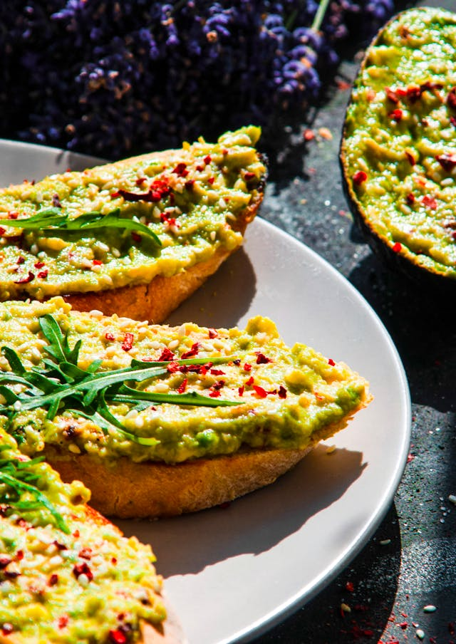
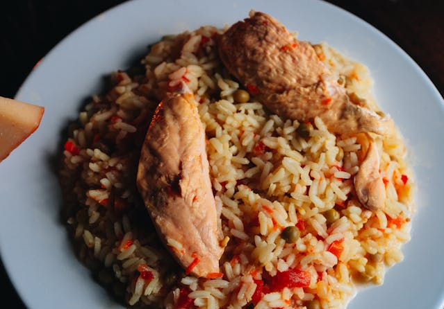
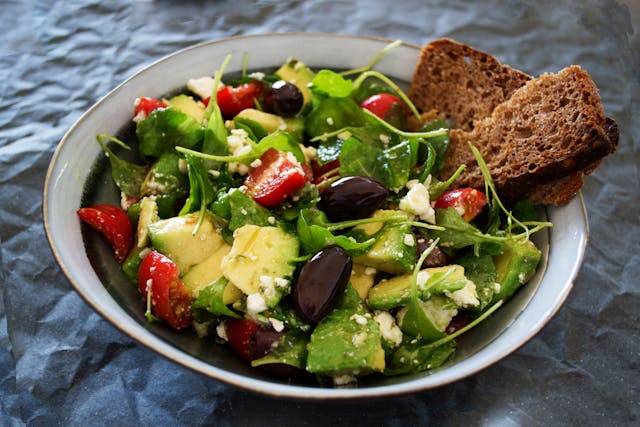

Menu
Welcome to Bistro Haven, where culinary art meets comfort food. Our menu is crafted with a blend of fresh, locally-sourced ingredients and international flavors that cater to every palate. Whether you're in the mood for a light bite or a hearty meal, our diverse selection promises a delightful dining experience.
At Bistro Garden, we believe in creating dishes that not only taste incredible but also tell a story of culinary passion and dedication. Our chefs are committed to using only the freshest ingredients, carefully selected from local farms and trusted suppliers, to bring you flavors that are both familiar and inspiring.
Appetizers
Fish Rounds on Arugula - A wonderful assortment of fish, vegetables, eggs and spices.
Guacamole - A beautiful combination of avocado, bread, tomatoes and wonderful spices.
Spanakopita - Flaky phyllo pastry filled with a savory mixture of spinach, feta cheese, and herbs, served with a side of tangy tzatziki sauce.
Main dishes
Chao Mali chicken - Beautiful chicken in sauce, served in a wonderful combination of rice and soy sauce.
Losos stek - irresistible salmon, honeymustard sauce, hazelnut, combined with imperial mix, saffron sauce, beetroot, pumpkin and sunflower seeds.
Mediterranean Stuffed Bell Peppers - Colorful bell peppers stuffed with couscous, tomatoes, onions, herbs, and feta cheese.
Salads
Quinoa salad - a refreshing, wonderful combination of avocado, cherry tomato and matovilac. Everything is covered with a dressing made of olive oil, lemon juice and a little honey that enriches the taste.
GastroHaven Signature Salad - Mixed greens, cherry tomatoes, cucumber, red onions, feta cheese, Kalamata olives, lemon-herb vinaigrette.
Caesar salad - a refreshing salad consisting of crisp romaine lettuce, toasted croutons, rich dressing and grated parmesan, with an irresistible dressing.
Deserts
Tiramisu - a popular dessert known for its rich and creamy texture, as well as the perfect balance of coffee, cocoa, and mild cheese flavours.
Baklava - Layers of flaky phyllo pastry with a sweet mixture of nuts, honey, and spices, served with vanilla gelato.
Waffle - This warm, buttery treat is eaten warm, dusted with powdered sugar or spread with Nutella.